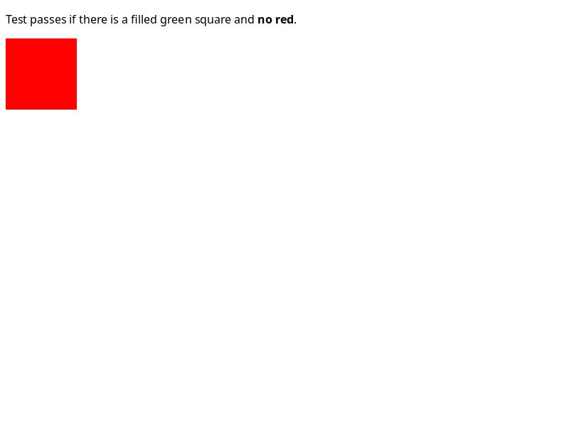
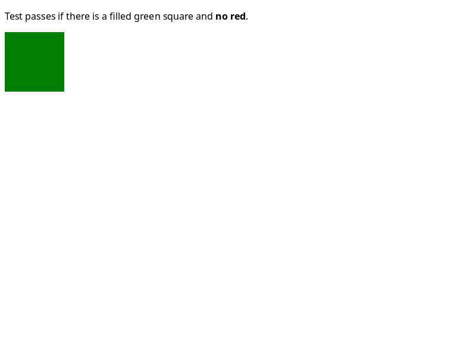
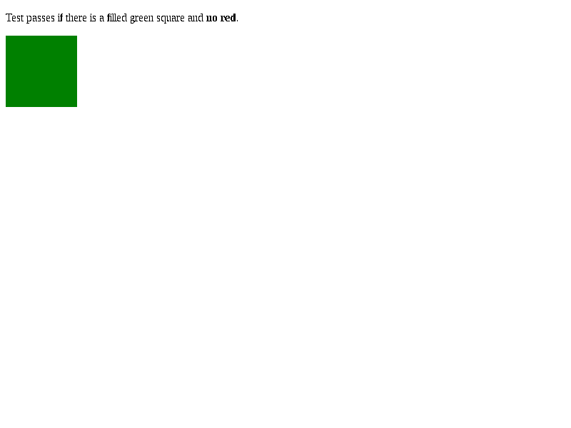

Lumen Linux · 30 October 2026 · candidate 226
398 more assertions pass.
Every prior pass is preserved.
Measured results walkthrough, rendered in Chromium.
It is not native Lumen UI footage or full-WPT certification.
594/594
Stepped math
4 complete files · IEEE and typed values1012/1012
Stretch sizing
48 complete files · 29/29 rendering87/87
MIME policies
7 complete files · worker lifetime repairedFresh fixed 640: 411/640 whole files · 9162/10540 assertions.
+10 whole files and +398 assertions versus 214; zero prior-pass losses.
Different selected scopes stay separate. Chromium 156 remains 560/640 whole files on the broad sample. Whole-browser 98/100 is not established.
Actual rendering: the red overlay is gone
Unedited mandatory WPT captures · 800×600 at DPR 1 · block-height-006
Intermediate candidate 220
FAIL against its own WPT reference
Final candidate 226
PASS against its own WPT reference
Chromium 156
PASS against its own WPT reference
Intermediate candidate 220 is not the starting 214 baseline. Each engine is compared with its own unchanged reference; font differences remain visible. Final 226 test/reference difference: 0 pixels.
Matched evidence, visible limits
| Scope | Before | Lumen 226 | Chromium 156 |
|---|
| Fixed 640 whole files | 401/640 | 411/640 | 560/640 |
| Fixed 640 assertions | 8764/10540 | 9162/10540 | 9551/10552 |
| Stepped math | 462/594 (214) | 594/594 | 592/594 |
| Stretch sizing | 218/1012 (219) | 1012/1012 | 1012/1012 |
| MIME full 7 | 37/86 safe 6 (221) | 87/87 | 87/87 |
Stepped math has zero overlap with 640. MIME gains are 49 recovered assertions plus 1 newly tested post-fix importScripts assertion. Broad registration counts differ and remain explicit.
Still incomplete:progress 138/139; DOM 71/72; grid percentage 29/44. XML parsing, 3D rotate and broader WPT coverage remain. URL work is deferred.
Verified and traceable
Native 143/143 · 22 mandatory authored fixtures, 424 fields.
29 stretch + 11 paint comparisons · 80 actual captures exited 0.
640 fresh browser executions · zero remaining owned profiles/PIDs.
The 424 fields include 3 ordinary crash smokes and are separate from WPT assertions. Namespace diagnostic 1/2 retains the preexisting XML failure and required SVG pass. Software-rendering evidence does not certify GPU support.
Tested source
3f8f41434bfca738a7a23ddd9448e6acf1fe6c4d
Engine SHA256
0305887bb666840e82857f13d28e6c5af5e33c7e2071e015c2e47c669cbf35b2
Reviewed public export
2287d7fc602954c85a51c36f45ab5faa2473decc
Source archive SHA256
4e28b1f5801d27a7cfb7012aef669d7800b875daa4b0d4d405e7b22e9b61eaf3
GPT-6 Astra Pro · Built-in agents
RubyWebterm · Chromium · FFmpeg
36-second 4:3 results walkthrough
Verified browser-engine work; original rendering evidence preserved.